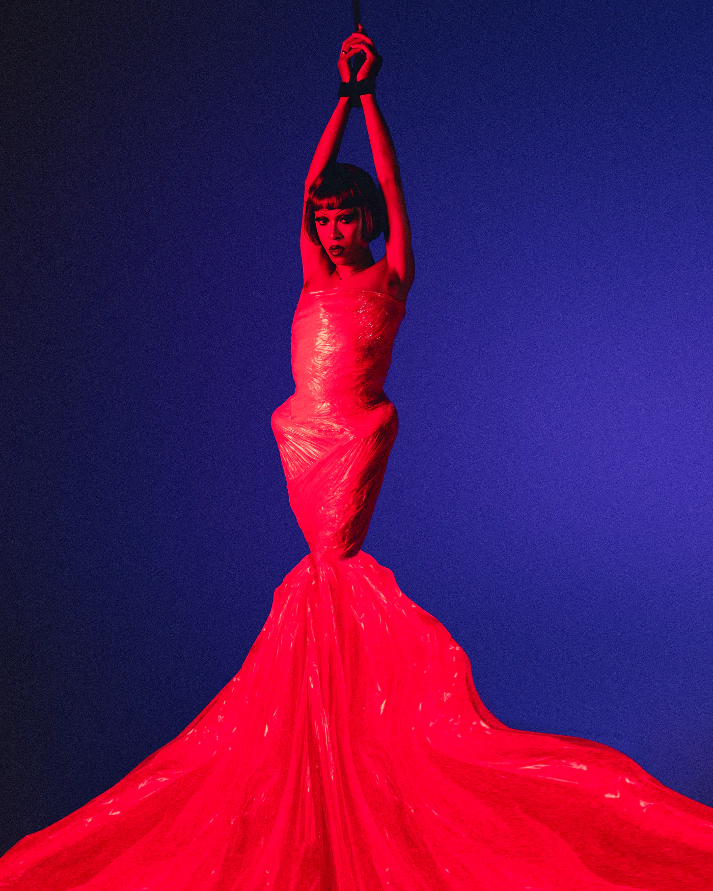
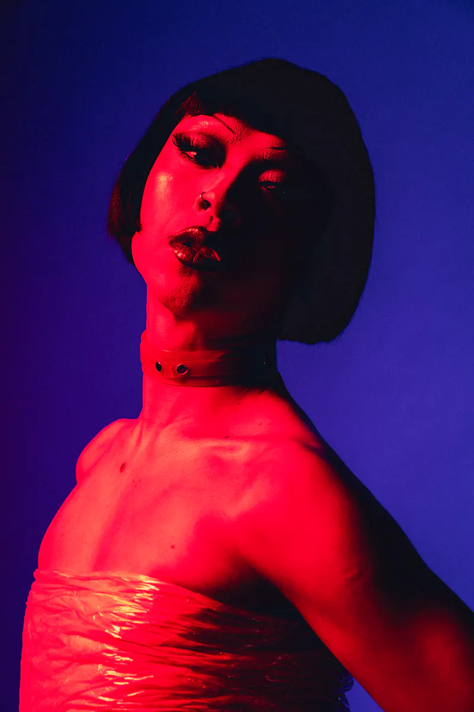
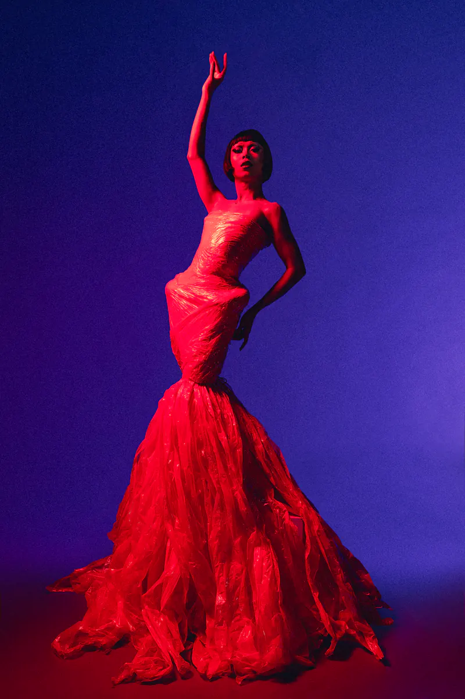
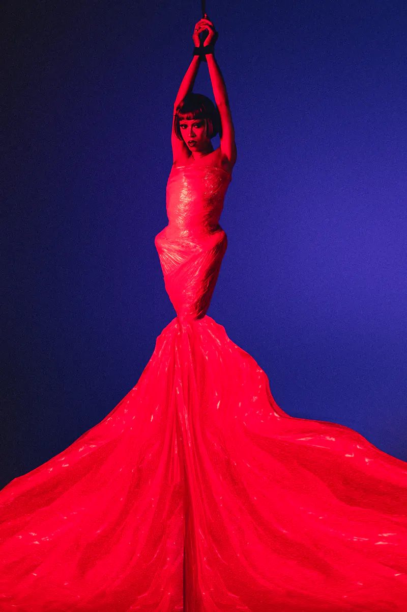
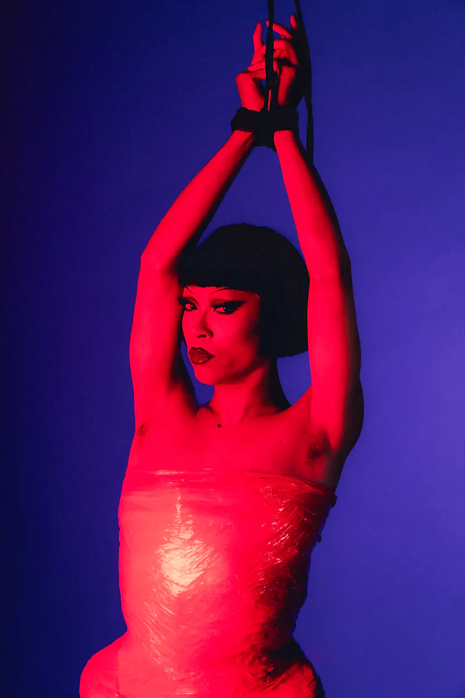
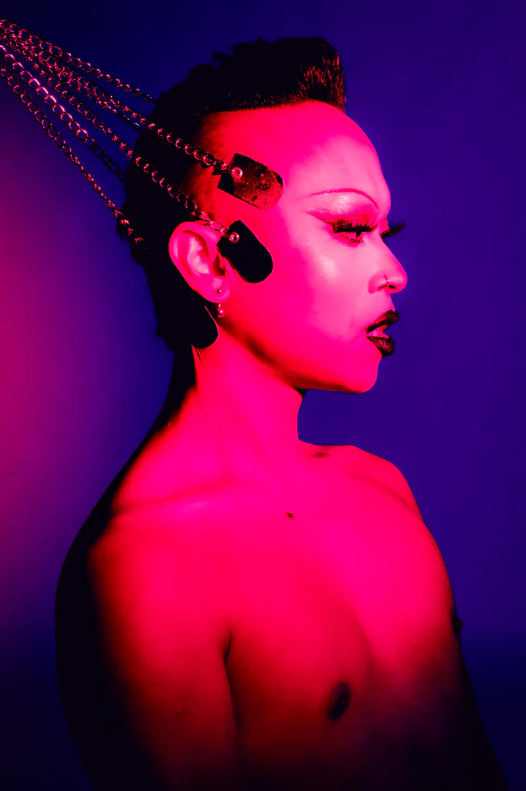
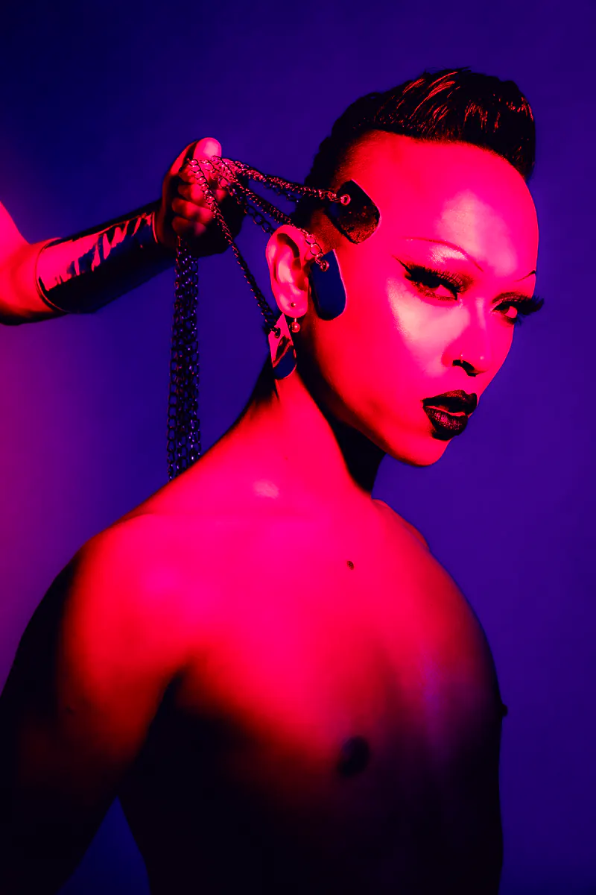

← All projects
02 — Studio
Restrained,
Restrained,
but couture
This project explores the meeting point between my drag persona, Licka, and my kink identity. Both are acts of transformation that begin with fantasy and end in surrender. In drag, once the work is done, all that's left is to inhabit the fantasy. Through mummification, restraint becomes another path to that same state. It is meditative, where the body quiets, sensation sharpens, and presence emerges through surrender to feeling.
Text by drag queen and model Licka Lolly (Afif Shafit)






